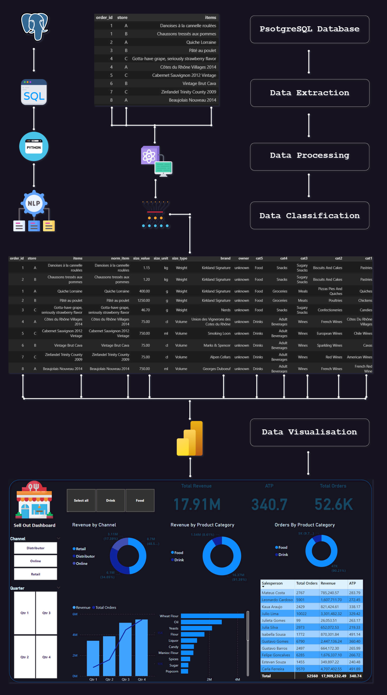

Welcome to my profile
Hi, my name is Mossaab and i'm a Data Analyst. I hold a Bachelor's and Master's degree in Applied Mathematics and Data Science
(Business Analytics, Paris AI SCHOOL).
Since I was young, I have always enjoyed looking at how people act and try to sort their beahvior type (this person is friendly,
this person is quick to be upset, calm etc...).
So that's how I look at big data sets : to me it is one big puzzle I want to solve.
Finding patterns nobody else sees is the challenge to me.
I have been working as a Data Analyst for more than a year and a half with experience in the Food & Beverages industry, Argriculture
and Retail.
I have worked on more than 20 Data Analytics and Data Science projects which gives me the ability to translate complex questions
into understandable insights.
As a Data Analyst, I know exactly how you can use data optimally within your business. Based on your objectives, we will make
a plan to reach the right insights.
Skills :
- Data Analytics
- Data Science (classification, prediction, segmentation)
- Data visualization
- Project Management
- Proficiency in Python, SQL, Talend, Power BI, Excel, Notion, PowerPoint
- I speak/write both French and English
Contact Me & let's collaborate !
E-mail : mossaab.khayrany@gmail.com;
Phone : 06 14 46 50 05;
Address : 79 rue avron, 75020 Paris;
Apprenticeship - Description & Achievements
Role Decription :
As a Data Analyst at FYRE EUROPE, I played a pivotal role in integrating project management skills with advanced data
science and analytics expertise. My responsibilities covered a diverse range of tasks aimed at optimizing organizational
processes and leveraging data-driven insights for strategic decision-making.
Role Architecture :
One key aspect of my role involved collaborating with cross-functional teams to identify project requirements and objectives.
Employing project management skills, I ensured that timelines were adhered and objectives were achieved.
My skills in data science and analytics came into play as I collected, processed, and analyzed large datasets to build
meaningful patterns and trends. By applying classification models and data visualization techniques, I provided valuable insights
that informed business decisions.
Furthermore, I actively contributed to the development and implementation of data-driven strategies, i identified opportunities
for operational optimization such as bettering the coordination between heads of departements after analyzing the projects timelines
data over the last 2 years.
The Data Analytics part :
The idea is to provide a digital solution for the restaurants owners that allows them to create a relationship with their
customers and manage their stores with high levels of proficiency and simplicity. Creating customer loyalty has great
returns for both parties—suppliers and customers.
To ensure the success of this relationship, the information locked within printed receipts in
restaurants and other meal-providing establishments is highly valuable. Both analyzing and enriching the raw information
contained in this data source can play a huge role in ensuring the satisfaction and costs optimization for
both suppliers and customers.
→ 66% of customers want brands to understand their unique needs and expectations.
→ 52% want all offers that come from a brand to be personalized.
Illustration :
Let's Focus on 'Products Names' :
The Product Name is an important element on which my main data project during my apprenticeship was built on, alongside
with the Word Data Enrichement
It's clear from the data diagram that I have access to the restaurant's data. Using Python or SQL, I can access the database
in real-time, verify the received data, report errors, and extract data for analytical or enrichment purposes.
.
To obtain a comprehensive understanding of customer consumption and provide insights about the food and beverages market, as well
as brand and product category performance, I initially needed to acquire as much information as possible about the products names.
The raw data only contains three components related to the products : Label, Quantity and Cost.
Problem & Goals :
My objective was to generate additional information related to the products names. To achieve this, using web scraping techniques
i constructed a large pre-enriched dataset with more than 40k entries containing all the products names with their respective
brands and categories to cover all products names that could potentially appear in printed receipts.
Data Enrichement process :

Challenges
One of the biggest challenges I faced during this long-term project was finding suitable data to train my unsupervised model.
Fortunately, I came across a dataset with over 500k entries from the Open Food Facts API. After meticulous cleaning, removal of
erroneous inputs, and addressing missing values, I focused on entries in both French and English languages. Through this process,
I successfully narrowed down the dataset to more than 40k entries that are now accurately classified.
VALUE OF THIS PROJECT
The Value of this project is ensuring that the data accurately and thoroughly represents the audience.
Accurate, enriched data is the key to creating targeted, personalized customer experiences.
Achievements :
- Identify target sales points.
- Launch commercial operations in the form of challenges.
- Track restaurants data in real-time.
- Give strategic insights into the market :
-Market penetration.
-Category performance.
-Brand performance.
-Detailed product analysis.
TECHNIQUES & TOOLS I USED :
Notion for projects management
Python
- Pandas, json, numpy, seaborn, matplpotlib.
- Regular Expressions.
- scikit-learn
SQL
- PostgreSQL.
- SQL Server Management Studio.
- SQL Queries for calculations and relevant information extraction.
Power-BI
- Data Visualisation.
- Reporting and presenting Insights.
What's the next step ?
As of now, I am refining the structure and accuracy of the classification process. This involves updating
and adding new entries for previously non-existing products. Additionally, I am conducting more feature
engineering campaigns on the columns to maximize the integrity & enrichment of the final results.
Internship - Description & Achievements
Role Decription :
As a BI Assistant at AGRIDATA, I played a role in integrating organizational skills and data
analytics expertise. My responsibilities were assuring the continuity of information flow between
data science team, the manager and the clients, while simultaneously produce data-driven insights and statistics
about the Argriculture market.
Role Architecture :
During my role as a BI Assistant, i was involved in collaborating with Data Science team to identify project requirements and objectives.
Employing project management skills, I ensured that timelines were adhered and objectives were achieved.
My skills in statistics came into play as I collected, processed, and analyzed sets of data to build
meaningful reports for clients presentations. By applying statistics models and data visualization techniques, I provided valuable
insights that helped business decisions.
Illustration :
Challenges & Achievements :
Challenges : My objective was to write and enrich analytical reports that summerize the profitability of agricultural products by production zones.
Some of the challenges i faced In the beginning, I was getting used to navigating large volumes of data and targeting the information
that would be useful to integrate into my reports, handling missing values, and presenting my findings in the most simplest ways.
Achievements : I Built and enhanced over 10 analytical reports with KPIs and data visualization components. I also conducted statistical
analysis and participated in explanatory presentations for clients.
TECHNIQUES & TOOLS I USED :
Excel for organization :
Python
- Pandas, numpy, seaborn, matplpotlib.
SQL
Excel
- Data Visualisation.
- Analytical Reporting.
CASE : HOW CAN I OPTIMIZE THE SALES FUNNEL ?
For a webshop I have done an extensive analysis to optimize the sales funnel.
The webshop wanted to know when people drop out during the ordering process and whether a
distinction could be made between different types of customers. When the sales funnel is
optimized according to the analysis below, turnover can potentially increase by 5.8%.
→ HOW MANY VISITORS DOES THE WEBSHOP HAVE AND HOW MANY ORDERS ?
- In 2021, the number of visitors increased because of digital campaigns.
- The percentage of unique visitors remained relatively stable over the past three years.
- The number of orders increased along with the number of visitors, but the number of items per
order didn't reach the level they hoped for.
→ WHAT DOES THE SALES FUNNEL LOOK LIKE AND WHERE DO VISITORS DROP OUT ?
Together with the webshop we identified the processes a visitor goes through until the purchase is done.
Using Google Analytics and the own systems of the webshop we were able to check which visitors visit the
website and which process they go through.
More than 60% of the visitors come via organic search, these are visitors who found the website
via a search engine. 14% of the traffic comes from visitors who entered the website themselves
in the browser, followed by e-mail (9%), social (5%), referral (3%) and other (6%).
When visitors reached the website, I found three situations in the order process where people
often do not complete their order. For each situation I looked at how to improve this.
Case & Solutions
- People add products to their shopping cart, but they do not view the contents of the total basket
( loss of 2.6% of the visitors ).
Solution : Display the icon of the shopping basket more prominently and if there are at least two
items in the shopping cart, display a pop-up to navigate to the total shopping basket.
- After people viewed their total shopping basket, 2.2% leaves the website during the process of logging
in or creating an account.
Solution : Allow people to pay as a guest without having to create an account.
- 1% of the visitors leave the order process after they saw the total order amount. The two most common
causes are unexpected costs (delivery costs) or unaccepted voucher codes.
Solution : Mention delivery costs clearly on the website and show the telephone number if a
voucher code is not accepted.
→ WHICH CHANNELS ARE MOST EFFECTIVE ?
Upon having a deeper look into the order process, I discovered that visitors arriving through emails
tend to have a higher likelihood of making a purchase. This can be due to the seamless login experience
users have when they click on the email link. Consequently, the dropout rate in the ordering process, specifically
between viewing the shopping basket and entering delivery details, is significantly reduced.
Emails prove particularly impactful during special occasions. The graph illustrates a surge in orders
surrounding events like Mother's Day and holidays, primarily influenced by email campaigns.
In response to these findings, a comprehensive email strategy was suggested and developed. This strategy covered
a range of considerations such as email frequency, optimal send-out times, and use of discounts.
→ WHAT IS THE AVERAGE ORDER SIZE ?
We would like to increase the number of orders, but it is also interesting to increase the number of items per order.
That's why I looked at the number of items ordered per channel.
The average order size is 1.4 items per order. Social is a channel where people do not often place an order, but the
average order size is high, followed by referrals and e-mail.
RESULTS
Based on this report, i gave recommendations and insights during a presentation to the webshop that resulted in an
immediate increase of returns that was reported to me after 3 months of implementation.
Project : UFO SIGHTINGS ANALYSIS
Introduction :
Fascinated by UFOs, aka 'Unidentified Flying Objects' , I delve into the space where theoretical physics intersects with
the unexplained. The peculiar aero-behavior exhibited by the unidentified flying objects challenges conventional physics laws,
this subject matter has targeted my curiosity about potential breakthroughs or civilizations pushing the boundaries of physics.
My interest in this project lies in exploring a relatively large number of UFO sightings as potential indicators of the truth
behind this intriguing phenomenon.
Data collection Architecture :
Table of contents :
- Import libraries
- Data loading
- Data cleaning
- First conclusion
- Feature EDA & Visualisation
- Second conclusion
- Data preprocessing
- Regression algorithm & predictions
→ Import Libraries :
import pandas as pd
import numpy as np
import matplotlib.pyplot as plt
import seaborn as sns
import folium
from folium.plugins import MarkerCluster
import plotly.express as px
import re
import spacy
import pandas as pd
from IPython.display import display
import folium
from folium.plugins import MarkerCluster
from sklearn.preprocessing import LabelEncoder
from sklearn.preprocessing import MinMaxScaler
from sklearn.model_selection import train_test_split
from sklearn.ensemble import RandomForestRegressor
from sklearn.metrics import mean_absolute_error, mean_squared_error, r2_score
from sklearn.model_selection import GridSearchCV
from IPython.display import IFrame
import sys
import warnings
if not sys.warnoptions:
warnings.simplefilter("ignore")
→ Data Loading :
#Load Dataset
ufo = pd.read_csv('ufo.csv', on_bad_lines='skip')
→ Data Cleaning :
→ First conclusion :
-After an initial analysis of the dataset, the following actions were taken to facilitate data visualization in the next stage :
- Some columns were renamed for easier readability.
- The 'datetime' column was split into distinct columns.
- The 'comments_len' column was transformed into a numeric column.
- Values in the 'shape' column were grouped into a new column.
- Some columns that did not have significant importance were removed following the aforementioned preprocessing.
- NaN values were not replaced with other values but were removed, considering the large number of rows.
→ Feature EDA & Visualisation :
→ second conclusion :
-After analyzing the data, we can draw the following conclusions:
- UFOs were most frequently observed during the summer season and in the countries of USA and GB, that can be due to the mostly
clear sky during summer seasons and the populations high densities.
- The longest duration of a UFO sighting was recorded in the countries CA and USA.
- The majority of observations were noted during the night, raising doubts about the shape of the UFOs.
- The most commonly reported UFO shapes are Round, Light (in the sky), and Triangle.
- The most active in writing comments are from the countries AU, with frequent mentions of the round, square and light UFO shapes,
in the second place comes GB, with comments regarding a light in the sky.
- During the night time, the most frequently observed types of UFOs were a light in the sky and round UFOs, during the day, the same
shapes of UFOs were mentioned, mainly a light in the sky and round UFOs.
- As it can be observed from the graphs, those who have had encounters with UFOs generally show a very positive attitude and pronounced
enthusiasm towards these experiences, while reactions of fear and unease seem to be less widespread. According to the statistical
analysis based on comments, it is found that approximately 66.8% of people have described these encounters as full of excitement
and positivity, while those who have expressed negative reactions, characterized by fear and unease, make up around 34.5%.
→ data preprocessing :
I will train a regression algorithm to predict the latitude and longitude of locations where UFOs might appear
in various cities around the world :

I chose the Random Forest model for regression due to its ability to handle large datasets and complex features. This algorithm provides robust
and accurate results in regression problems with intricate data structures. Significant performance observed in our evaluations and the alignment
with the test data have confirmed this choice.
- Scatterplot: This scatterplot graphically represents the model's performance and shows remarkable accuracy. Virtually all points
form a straight diagonal line from the bottom-left corner to the top-right corner. This pattern suggests an excellent fit of the model
to the data, highlighting a notable alignment.
- Histogram: The histogram graph provides insights into the frequency of differences between predicted and actual values of the model.
Emphasizing symmetry, centrality, and dispersion, we observe that the histogram is centered around the value 0. This feature indicates
a correct trend in the model overall, as most errors revolve around the central point.
→ Regression algorithm & predictions :